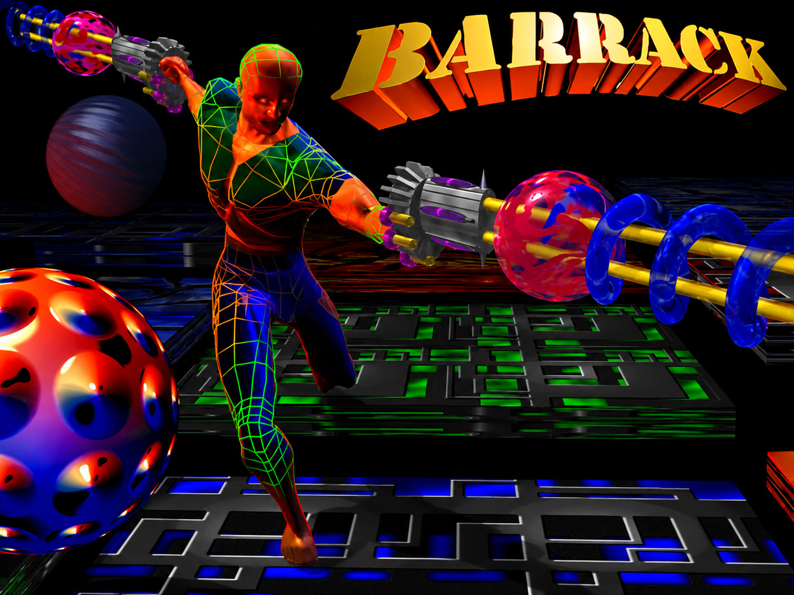
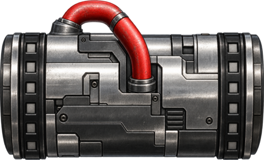
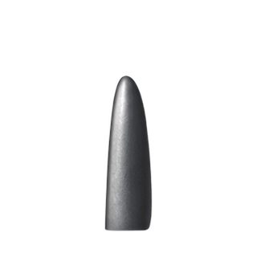
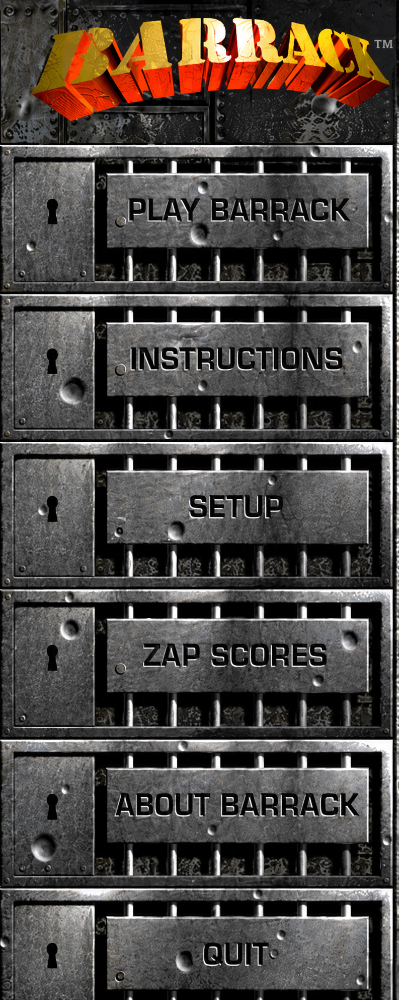
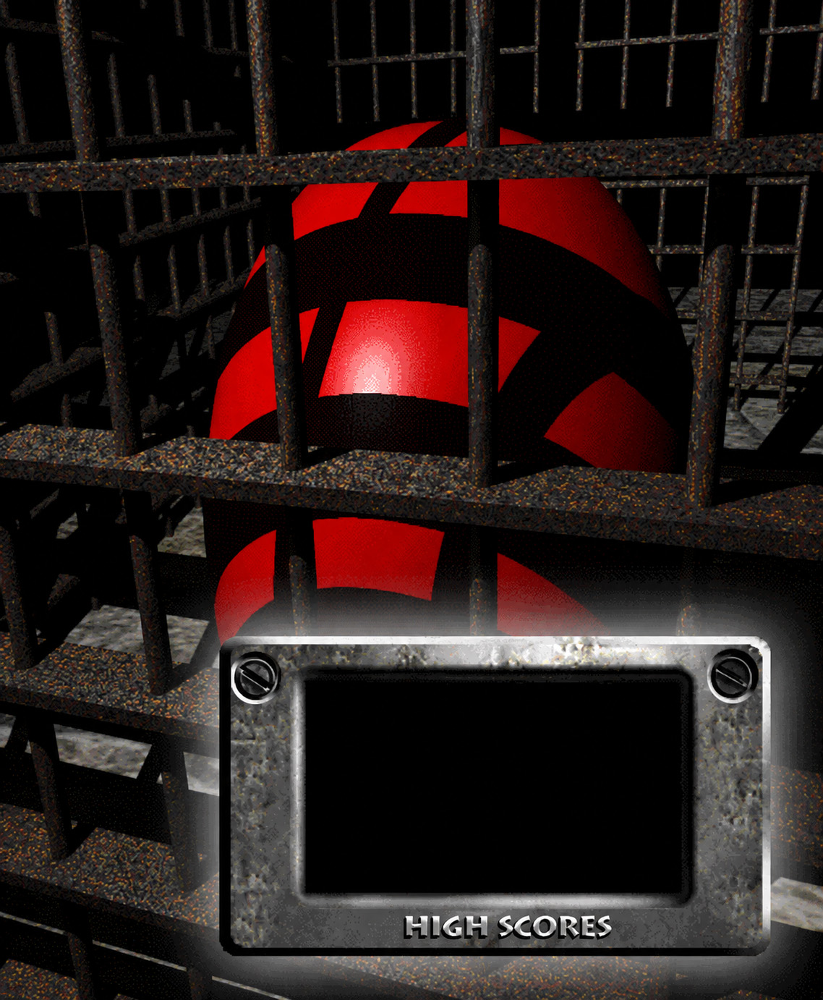
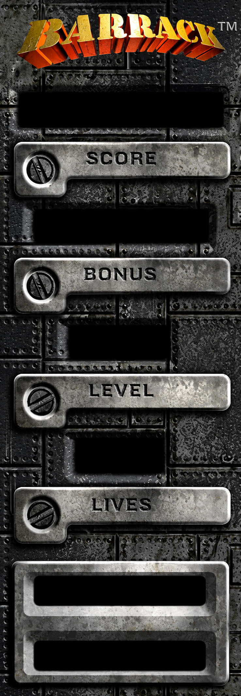

Action with consequences
Every barrier changes the board. A badly timed shot can cost a life; a smart split can isolate threats, create bonus opportunities and turn a hostile region into cleared ground.
1996 Macintosh classic · rebuilt for modern macOS
A modern port and reimplementation of the classic Barrack game, rebuilt from its original Macintosh resources, PowerPC behavior and timing while preserving the peculiar mix of reflex, strategy and controlled chaos that made it Barrack.

The game
Barrack is an abstract action-strategy game built around a mouse-controlled barrier gun. Fire horizontal or vertical barriers across the playfield, divide dangerous actors into smaller regions, exploit their behavior and clear enough territory to advance.
Every barrier changes the board. A badly timed shot can cost a life; a smart split can isolate threats, create bonus opportunities and turn a hostile region into cleared ground.
Pawn, Nuke, Sentry, Glass, Orange and Ooze each behave differently. Bosco, Shark Gotcha, Yummies and the rotating Multiplier add their own particular forms of helpfulness and sabotage.
Clear 80 percent of the active turf to finish the level. Surviving populations carry forward, so the next round remembers what you failed to deal with. Charming, really.

Barrier gun
BoscoThe original
Barrack first appeared in March 1996. It was written by Greg Lovette and published as shareware by Ambrosia Software. The original FAQ described it as an “addictively abstract Macintosh action game”, sitting somewhere between reflex-heavy action and board-clearing strategy.
The game itself was roughly 12,000 lines of C, supported by a graphics toolkit of about 4,500 more lines of mostly C with some mixed-mode assembly. In a very 1996 sentence, it expected a 256-colour Macintosh, a 13-inch or larger display and about 3.8 MB of free memory.
Artwork was created by Mark Conge, with the Bosco caricature by Mark Inman. The presentation was unmistakably Ambrosia-era Macintosh: QuickDraw graphics, resource forks, PICT artwork, snd resources, steel interfaces and enough rivets to survive atmospheric re-entry.

The reimplementation
The modern version is built by recovering the original resources and then matching the game’s actual behavior: timing, movement callbacks, collision rules, score paths, UI state and audio sequencing. Where modern artwork replaces low-resolution source material, the original logical geometry is kept intact.
Recovered from the classic resource forks and mapped back to actors, animation chains and gameplay states.
Original effects restored alongside all four music resources and the recovered playlist behavior.
The original foreground/background pixel-pattern pairs return as the rotating playfield themes.
The original 474×480 active playfield and 166-pixel sidebar remain the coordinate system underneath the modern rendering.
Under the steel
The original PowerPC PEF executable and classic Macintosh resource forks were analyzed to recover gameplay rules that cannot be inferred reliably from screenshots alone. The reimplementation translates those findings into Swift and SpriteKit rather than emulating the original application.
Recovered presentation
Title screens, score hardware and HUD chrome are retained from the original material and integrated into the modern build rather than replaced by generic controls.


Credits & preservation
This modern port/reimplementation is an independent preservation project. Barrack, its original artwork, audio and associated trademarks remain the property of their respective rights holders. No affiliation with or endorsement by the original creators or publisher is implied.